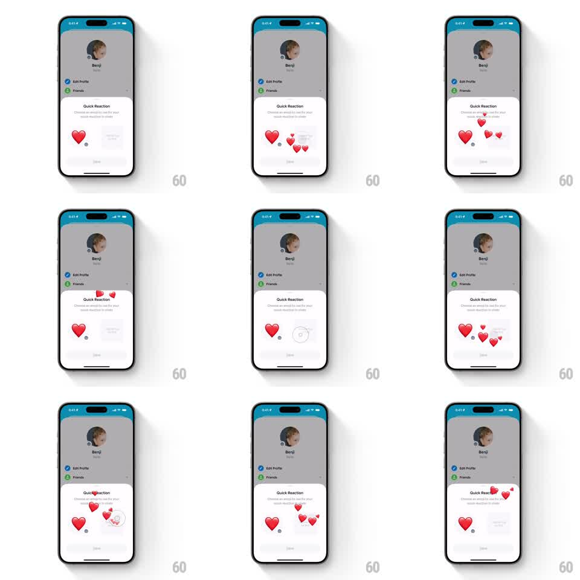

Media
Frame-by-frame

Rebuild this interaction 1:1: Honk's Quick Reaction tray - the "Quick Reaction" sheet carries a circular emoji picker next to the big preview, and double-tapping the preview fires bursts of hearts that spill over the sheet onto the dimmed profile.

Rebuild this interaction 1:1: Honk's Quick Reaction tray - the "Quick Reaction" sheet carries a circular emoji picker next to the big preview, and double-tapping the preview fires bursts of hearts that spill over the sheet onto the dimmed profile. ## Integration Integration: stack-agnostic spec - springs given as stiffness/damping, timed motions as duration + curve; map every value to your framework and animation library of choice. ## Scene "Quick Reaction" sheet over the dimmed profile (Benji): title, "Choose an emoji to use for your quick reaction in chats" subcopy, a large red heart preview with a small circular emoji tray beside it (clock-face style picker showing the current glyph), and a Save button. Double-taps send heart bursts arcing above the sheet's top edge. ## Motion spec Pattern: picker tray plus double-tap burst escaping the sheet. - Sheet entrance: slides up over the dimmed profile (spring ~300/24, 350ms). - Tap the circular tray: it pops (scale 1 -> 1.1 -> 1, 160ms) and opens the emoji picker; choosing a glyph swaps the preview (crossfade + scale pop, 200ms). - Double-tap the big preview: it pulses (scale 1 -> 1.15 -> 1, 180ms) and 6-10 hearts burst from it (scale 0 -> 1, 50ms stagger), floating upward (translateY -150 to -300pt over 1-1.4s) with sway and rotation, fading out at the end. - The burst layer sits above the sheet - hearts visibly cross the sheet's rounded top corners onto the dimmed profile before fading. - Repeated double-taps stack bursts. ## Calibration - The picker tray reads as a small clock-style dial with the current emoji in its center. - Hearts escaping past the sheet top are the detail that sells the effect - clip nothing. ## Reduced motion Preview pulses once per double-tap; no floating burst. ## Don't miss - The tray reflects the selected emoji at all times, matching the burst glyph. - The dimmed profile stays static underneath; only hearts travel over it.